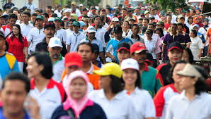
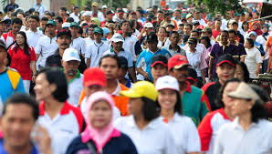

Masyarakat memiliki peran penting dalam keberhasilan SDG 14 karena perubahan yang terjadi di laut sangat terkait dengan perilaku manusia sehari-hari. Upaya sederhana seperti mengurangi penggunaan plastik sekali pakai, memilah sampah, dan mendukung produk laut yang berasal dari perikanan berkelanjutan dapat memberikan dampak langsung pada kesehatan ekosistem laut. Partisipasi dalam kegiatan bersih pantai, edukasi lingkungan, dan kampanye kesadaran publik juga membantu memperkuat budaya peduli laut. Di tingkat komunitas pesisir, praktik penangkapan ikan ramah lingkungan dan dukungan terhadap kawasan konservasi dapat menjaga ketersediaan sumber daya laut untuk jangka panjang. Selain itu, masyarakat dapat mendorong pemerintah dan pelaku industri untuk menerapkan kebijakan yang lebih bertanggung jawab melalui keterlibatan publik dan advokasi. Dengan kolaborasi antara masyarakat, pemerintah, dan dunia usaha, pencapaian SDG 14 dapat berjalan lebih cepat dan efektif.